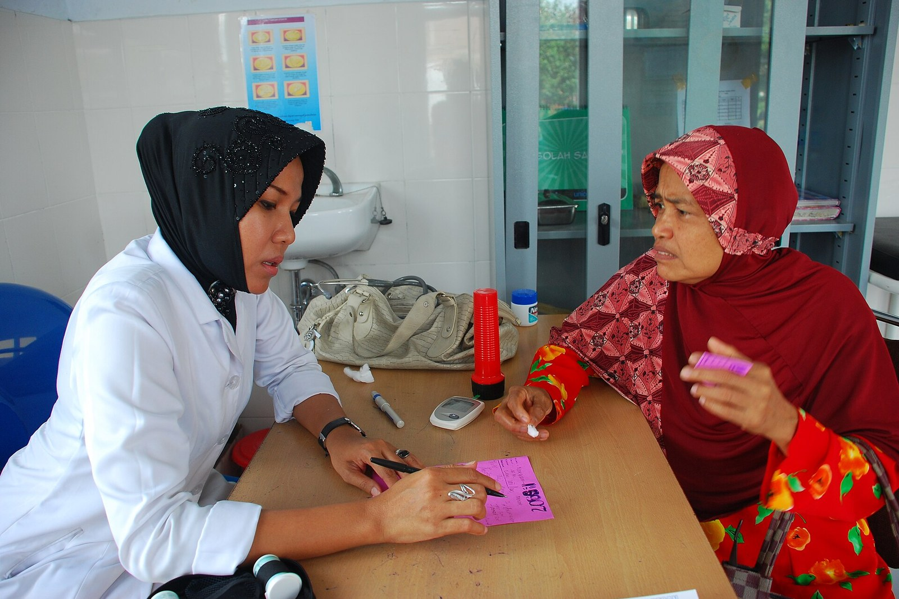
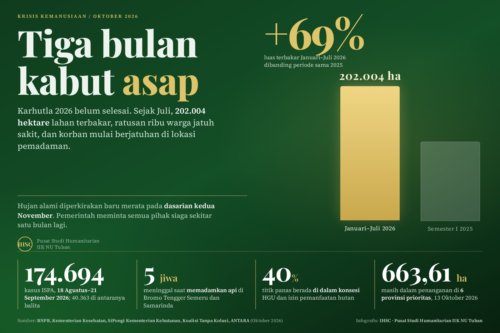

Global Humanitarian Funding Falls 30 Percent as Channels for Local Actors Narrow
Dana Kemanusiaan Dunia Susut 30 Persen, Kanal untuk Aktor Lokal Makin Sempit
Ketuk gambar untuk membuka ukuran penuh / Tap image for full size
Money is shrinking, but the hardest hit are the organisations in the countries that need it most.
Uang bantuan makin sedikit, tetapi yang paling terpukul justru lembaga di negara yang paling membutuhkan dana itu.
TUBAN, IHSC. International humanitarian assistance fell to 33.3 billion US dollars in 2025, 20 percent lower than a year earlier and 30 percent below its 2022 peak of 47.5 billion dollars. The Global Humanitarian Assistance Report 2026 calls it the lowest level in a decade.
TUBAN, IHSC. Bantuan kemanusiaan internasional turun ke 33,3 miliar dollar AS pada 2025, berkurang 20 persen dalam setahun dan 30 persen dibandingkan puncaknya pada 2022 sebesar 47,5 miliar dollar AS. Laporan Global Humanitarian Assistance 2026 menyebut angka itu sebagai level terendah dalam satu dekade.
United Nations coordinated appeals were only 35 percent funded. Donors provided 16.6 billion dollars, leaving a shortfall of 30.5 billion dollars, the largest funding gap on record. In 2022 the same appeals were 61 percent funded.
Seruan pendanaan Perserikatan Bangsa-Bangsa hanya terpenuhi 35 persen. Dana yang terkumpul 16,6 miliar dollar AS, menyisakan kekurangan 30,5 miliar dollar AS atau gap terbesar dalam sejarah pencatatan. Pada 2022, seruan yang sama terpenuhi 61 persen.
The deepest cuts came from the United States, which reduced its contribution by 55 percent from 13.5 billion to 6.1 billion dollars, and Germany, which cut 36 percent. Together they account for 88 percent of the total decline. Private funding did not close the gap: it fell from 11.3 billion dollars in 2022 to 6.8 billion in 2025.
Pemotongan terbesar datang dari Amerika Serikat, yang mengurangi kontribusinya 55 persen dari 13,5 menjadi 6,1 miliar dollar AS, dan Jerman yang memotong 36 persen. Keduanya menyumbang 88 persen dari total penurunan. Dana privat tidak menutup kekurangan, karena turun dari 11,3 miliar dollar AS pada 2022 menjadi 6,8 miliar dollar AS pada 2025.
The donor mix has shifted. The share held by the four traditional OECD donors fell from a range of 61 to 67 percent to 47 percent. Qatar raised its contribution by 189 percent, the United Arab Emirates by 54 percent, and Saudi Arabia entered the world's top four. European Union institutions are now the lead donor in 18 of the 20 largest recipient countries.
Susunan donor pun berubah. Pangsa empat donor tradisional negara-negara OECD turun dari kisaran 61 sampai 67 persen menjadi 47 persen. Qatar menaikkan kontribusi 189 persen, Uni Emirat Arab 54 persen, dan Arab Saudi masuk empat besar dunia. Lembaga Uni Eropa kini menjadi donor utama di 18 dari 20 negara penerima terbesar.
What changed is not only the volume of money but the way needs are counted. The Global Humanitarian Overview 2026 records 239 million people in need, 35 percent below the 2023 peak, after 152 million people were removed from plans through successive prioritisation rounds. Prioritised requirements were cut to 23.6 billion dollars from 47.2 billion previously.
Yang berubah bukan hanya jumlah uang, tetapi juga cara kebutuhan dihitung. Global Humanitarian Overview 2026 mencatat 239 juta orang membutuhkan bantuan, turun 35 persen dari puncak 2023, setelah 152 juta orang dikeluarkan dari rencana melalui prioritasi berlapis. Kebutuhan prioritas dipangkas menjadi 23,6 miliar dollar AS dari sebelumnya 47,2 miliar dollar AS.
The consequence is clearest in funding for local organisations. Direct and indirect funding to local and national organisations stands at 8.7 percent of the total, down from 3.5 billion to 2.5 billion dollars and far below the 25 percent target agreed under the Grand Bargain. Within pooled funds, allocations to national NGOs are just 7 percent in 2026, against almost 46 percent in 2025. After the closure of USAID, the United States channelled nearly 3.8 billion dollars into UN-managed pooled funds while opening only 18 of the 30 eligible countries.
Akibatnya paling jelas pada pendanaan lembaga lokal. Dana langsung dan tidak langsung ke organisasi lokal dan nasional tinggal 8,7 persen, turun dari 3,5 menjadi 2,5 miliar dollar AS, jauh dari target 25 persen yang disepakati dalam Grand Bargain. Di mekanisme dana bersama atau pooled fund, alokasi ke lembaga swadaya masyarakat nasional hanya 7 persen pada 2026, padahal pada 2025 hampir 46 persen. Setelah penutupan USAID, Amerika Serikat menyalurkan hampir 3,8 miliar dollar AS ke dana bersama yang dikelola PBB dan hanya membuka 18 dari 30 negara yang memenuhi syarat.
The same picture holds for the modes of aid with the strongest evidence base. Cash assistance raised its share to 21 percent of the total, but its volume fell 11 percent to 7.3 billion dollars. Anticipatory action, money released before a disaster strikes, accounts for just 1 percent of the total, and the average disbursement per activation collapsed from 2 million to 821,000 dollars.
Pada moda bantuan yang paling terbukti efisien, gambarannya sama. Bantuan tunai naik pangsanya menjadi 21 persen dari total, tetapi nominalnya turun 11 persen menjadi 7,3 miliar dollar AS. Aksi antisipatif, yaitu dana yang dicairkan sebelum bencana terjadi, hanya menyerap 1 persen dari total, dengan rata-rata dana per aktivasi anjlok dari 2 juta menjadi 821.000 dollar AS.
The Indonesian picture
Gambaran Indonesia
Domestically, spending on social protection remains large, though not in the sense of a humanitarian budget. The 2026 state budget allocates 508.2 trillion rupiah to social protection. Social assistance disbursed up to 30 September 2026 reached 115.8 trillion rupiah, or 71.2 percent of the ceiling.
Di dalam negeri, uang untuk perlindungan sosial tetap besar, tetapi bukan dalam pengertian anggaran kemanusiaan. APBN 2026 mengalokasikan 508,2 triliun rupiah untuk perlindungan sosial. Realisasi bantuan sosial sampai 30 September 2026 mencapai 115,8 triliun rupiah atau 71,2 persen dari pagu.
Disaster funding is far smaller. The Ready-to-Use Fund plus the Disaster Reserve Fund is set at 5.25 trillion rupiah a year, while disbursements for assistance, rehabilitation and disaster response from January to September 2026 reached 5.6 trillion rupiah.
Anggaran kebencanaan jauh lebih kecil. Dana Siap Pakai ditambah Dana Cadangan Bencana dialokasikan 5,25 triliun rupiah per tahun, sementara realisasi asistensi, rehabilitasi, dan penanggulangan bencana Januari sampai September 2026 tercatat 5,6 triliun rupiah.
Public giving is also large, but not yet institutionalised. National collection of zakat, infaq, sadaqah and other religious social funds reached 44.7 trillion rupiah in 2025, up 9.54 percent, against an estimated potential of 327.6 trillion rupiah. The BAZNAS report notes that the number of zakat payers actually declined, so growth came from value rather than a wider base.
Dana masyarakat juga besar, tetapi belum terlembaga. Pengumpulan zakat, infak, sedekah, dan dana sosial keagamaan lainnya secara nasional mencapai 44,7 triliun rupiah pada 2025, naik 9,54 persen, dari potensi yang diperkirakan 327,6 triliun rupiah. Laporan BAZNAS mencatat jumlah muzaki justru menurun, sehingga pertumbuhan datang dari nilai, bukan dari perluasan basis.
Household generosity in Indonesia remains above the global average. The World Giving Report 2025 places Indonesia 21st out of 101 countries, with average donations of 1.55 percent of income against a global average of 1.04 percent. The pattern is dominated by giving directly to individuals and families rather than through institutions.
Kedermawanan rumah tangga Indonesia tetap di atas rata-rata dunia. World Giving Report 2025 menempatkan Indonesia di peringkat 21 dari 101 negara dengan donasi rata-rata 1,55 persen dari pendapatan, di atas rata-rata global 1,04 persen. Polanya didominasi pemberian langsung kepada individu dan keluarga, bukan melalui lembaga.
IHSC identifies two gaps that need closing. First, pre-disaster financing: money released before an event is proven cheaper, yet its share remains 1 percent and domestic disaster budgets are reactive by design. Second, the institutionalisation of public funds: the scale of zakat funding and household donations is not matched by measurable programme channels. While both gaps remain open, humanitarian work will keep depending on how quickly funds can be raised after a disaster.
IHSC menilai ada dua celah yang perlu ditutup. Pertama, pembiayaan pra-bencana, karena dana yang dicairkan sebelum kejadian terbukti lebih murah, tetapi porsinya tetap 1 persen dan anggaran kebencanaan domestik bersifat reaktif secara desain. Kedua, pelembagaan dana publik, karena besarnya ZISWAF dan donasi rumah tangga belum diikuti jalur program yang terukur. Selama kedua celah itu terbuka, kerja kemanusiaan akan terus bergantung pada kecepatan galang dana setelah kejadian.
Sources
Sumber
- ALNAP, Global Humanitarian Assistance Report 2026, executive summary: alnap.org
- ALNAP, Global Humanitarian Assistance Report 2026, ringkasan eksekutif: alnap.org
- ALNAP, State of the Humanitarian System 2026, chapter 1: alnap.org
- ALNAP, State of the Humanitarian System 2026, bab 1: alnap.org
- ALNAP, Global Humanitarian Assistance Report 2026, reform and delivery chapter: alnap.org
- ALNAP, Global Humanitarian Assistance Report 2026, bab reformasi dan cara penyaluran: alnap.org
- Ministry of Finance of the Republic of Indonesia, 2026 state budget: kemenkeu.go.id
- Kementerian Keuangan RI, APBN 2026 dan agenda prioritas nasional: kemenkeu.go.id
- Ministry of Finance of the Republic of Indonesia, Disaster Pooling Fund, 21 September 2026: fiskal.kemenkeu.go.id
- Kementerian Keuangan RI, Pooling Fund Bencana untuk ketahanan fiskal, 21 September 2026: fiskal.kemenkeu.go.id
- ANTARA, social assistance disbursement of 115.8 trillion rupiah up to September 2026: antaranews.com
- ANTARA, realisasi belanja bantuan sosial Rp 115,8 triliun per September 2026: antaranews.com
- BAZNAS, National Zakat Management Report 2025: baznas.go.id
- BAZNAS, Laporan Pengelolaan Zakat Nasional 2025: baznas.go.id
- CAF, World Giving Report 2025: cafonline.org
- CAF, World Giving Report 2025: cafonline.org
- LDKPI, seven years of international grant delivery: ldkpi.kemenkeu.go.id
- LDKPI, tujuh tahun kinerja penyaluran hibah luar negeri: ldkpi.kemenkeu.go.id
- Editorial note: all figures are as of 24 October 2026. The 13.6 percent in the fourth infographic is IHSC's own calculation, 44.7 trillion rupiah collected against a potential of 327.6 trillion.
- Catatan redaksi: seluruh angka mengacu pada data per 24 Oktober 2026. Angka 13,6 persen pada infografis keempat adalah perhitungan IHSC dari Rp 44,7 triliun realisasi ZISWAF terhadap potensi Rp 327,6 triliun.
- Hero photograph: USDA, public domain, via Wikimedia Commons. All infographics: IHSC.
- Foto utama: USDA, domain publik, melalui Wikimedia Commons. Seluruh infografis: IHSC.
Related news
Berita terkait

NewsKabarForty-Seven Doctors for Every Hundred Thousand People
Empat Puluh Tujuh Dokter untuk Seratus Ribu Penduduk
24 October 202624 Oktober 2026 NewsKabar
NewsKabar
Twelve Months, Six Sessions, No Tuition: Geneva Opens Health Diplomacy Training for 2027
Dua belas bulan, enam sesi, tanpa uang kuliah: Jenewa buka pelatihan diplomasi kesehatan 2027
20 October 202620 Oktober 2026
EmergencyDarurat